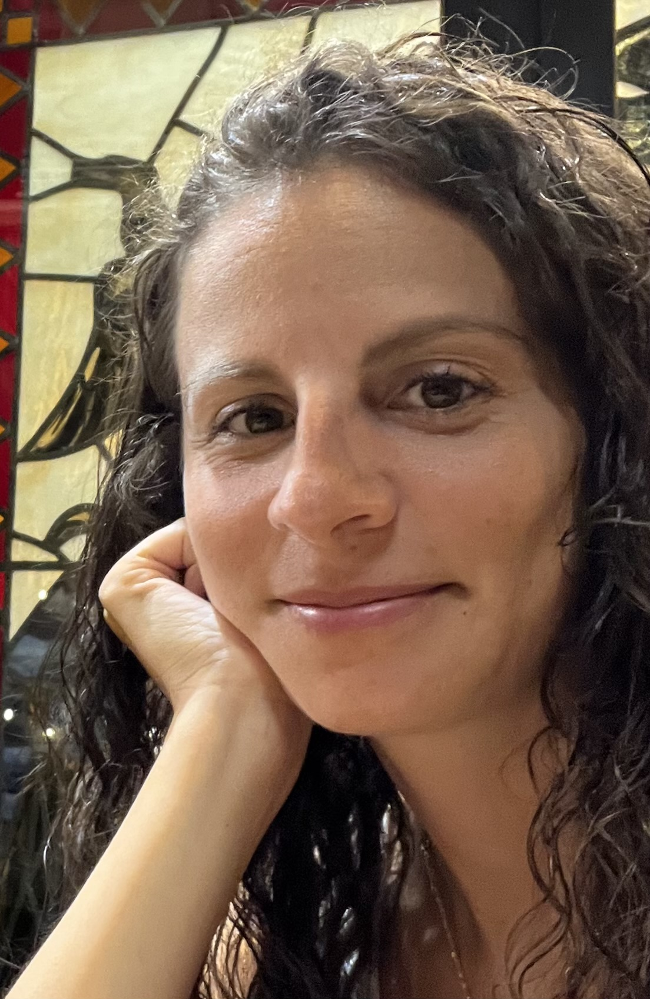

Ciao! Sono Livia Luciani
Appassionata da sempre di viaggi, buon cibo e vino
oltre a un'esperenza decennale nel campo della ristorazione, ho voluto indirizzare tutto questo
nel campo dello sviluppo web, per descrivere e esaudire al meglio le esigenze dei consumatori.
Visita i miei progetti e se ti fa piacere contattami!